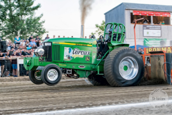
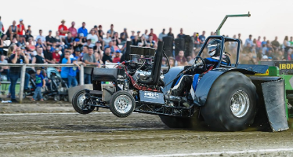
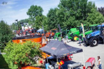
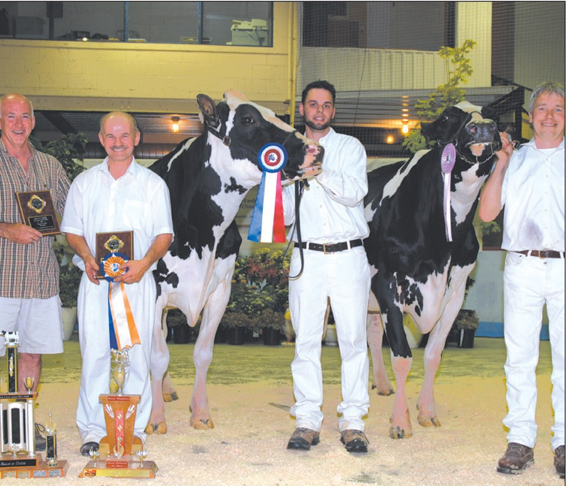

On se revoit en juillet 2027
Merci aux milliers de visiteurs de la 44e édition. Six jours d'agriculture, de tracteurs et de fête à Saint-Isidore, à 20 minutes de Québec. [Dates 2027 à confirmer]


- Éditions
- 44
- Producteurs fondateurs
- 28
- Bénévoles
- ≈ 50
- Prix d'entrée
- 0 $
Six jours,
six ambiances
Le matin aux étables, l'après-midi aux kiosques, le soir sous le grand chapiteau.

-
01
Jugements d'animaux
Holstein, jeunes éleveurs et relève : la raison d'être de l'Expo depuis 1983.
-
02
Tire de tracteurs
Super Stock, Pro Farm, 4x4 modifiés et semi-remorques. La soirée qui fait trembler les estrades.
-
03
Le grand chapiteau
Spectacles chaque soir, Beach Party et feux d'artifice.
-
04
Place de la famille
Cinéma extérieur, jeux gonflables, mini-ferme et mascottes.
-
05
Exposants et machinerie
Concessionnaires, producteurs, artisans et le pavillon des commerces.
-
06
Agriculture d'aujourd'hui
Agriculture 4.0 avec le Cégep de Lévis, démonstrations et kiosques éducatifs.

« Créée par 28 producteurs visionnaires. »
À l'automne 1982, des producteurs de la Beauce, de Lévis et de Dorchester veulent comparer leur bétail. Ils imaginent un « party agricole » ouvert à tous. Plus de 40 ans plus tard, l'idée tient toujours, grâce aux bénévoles.
Lire l'histoire et nos bâtisseurs- Lettres patentes et 1re édition, présidée par Odilon Pelchat
- Quatre nouvelles étables pour tous les animaux
- Construction du palais des commerces
- Premiers manèges de l'histoire de l'Expo
- 44e édition, toujours gratuite
L'hiver,
votre roulotte
dort en dedans.
Remisage intérieur dans les bâtiments de l'Expo pour roulottes, VR, autos, pick-ups, bateaux et motos. Assuré, avec plus de 20 ans d'expérience.